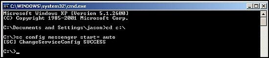

Sometimes people disable Windows Services and can't get the Windows Services screen to enable a necessary service. The easiest route is to circumvent that interface and go straight to the command line. You can also do this from Safe Mode.
To get there while running Windows, click on Start, then Run.
Type in cmd and click OK to enter the command line mode.Get a list of inactive services to help find the one that you need to enable.
- sc query type= service state= inactive | more
The sc query is a command to tell Windows you want to query a service. The type tells it what specific group you want and the state tells it you want to see a grouping by it status: active, inactive and all respectively. More keeps you from watching a bunch of text whiz past meaninglessly. You can hit the space bar to page down. More is a reader or a text viewer utility in the command line. It's like a mini non-readable notepad. You can also pipe this (the | character is pipe command) to other readers or cat (the > character is a cat command) to a file and read it. I suggest the > option if you have a working OS well enough that you can open a text file.
For example:
- sc query type= service state= inactive > C:\broken_services_list.txt
Run that command and then you can open the file C:\broken_services_list.txt in notepad and make noes, choose services to modidy and work on your PC one item at a time. It's actually quite efficient.
There's more than one way to get what you need. This one method.
This gives you a nice little text file you can open, edit, take notes, etc.
It may help you to copy and paste (select, right click and click copy and then right click in the command window and select paste) the service name to avoid misspelling it.
Once you map out your problems, you can start enabling services again.
The syntax is:- sc config servicename start= auto
Here's an example:- sc config messenger start= auto
Now, I'd never encourage you to enable the Messenger service, but it's off and in our list and you can see here it successfully enabled it.

Now, we could just do this with a series of services and restart the PC to see if stuff starts working properly again. Or, you can then actually start the service since it's been enabled.
To step backward, just change a few commands. If you wish to stop and then disable a particular Windows Service the following will work.
In this case, I'm stopping and disabling Messenger because I consider it unsafe.
To stop the service, I key in the following and hit enter:
To disable it, I key in the following and hit enter:
- sc config messenger start= disable
NOTE: a reader says the proper command is actually:
- sc config messenger start= disabled
See the missing (d) in my original. Make sure you try that out if it fails to work.
END